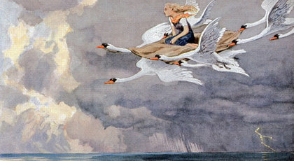

Yaban Kuğuları

Bir varmış, bir yokmuş. Evvel zamanlarda, ülkenin birinde bir kral yaşarmış. Bu kralın on bir oğlu bir de kızı varmış. Bir gün kralın karısı ölmüş. Kral ve çocuklar Kraliçe’nin ölümüne son derece üzülmüşler. Gel zaman git zaman kral yeniden evlenmiş. Kralın yeni eşi kötü kalpli bir büyücüymüş. Çocukları da hiç mi hiç sevmiyormuş. Krala sürekli çocukların çok yaramaz olduğundan bahseder onları saraydan kovmak için fırsat kollarmış. Kral sonunda söylenenlere inanmaya başlamış. Kızını o yakınlarda yaşayan bir çiftçi ailenin yanına vermiş. Kız burada on beş yaşını doldurana kadar kalacakmış.
Kralın on bir oğlu ise kötü kalpli kraliçe tarafından on bir kuğu kuşuna dönüştürülmüş. Çocuklar bir sabah saraydan uçarak ayrılmışlar. Aradan uzun yıllar geçmiş. Kralın küçük kızı yaşadığı çiftçi ailenin yanında on beş yaşına basmış. Aynı gün saraya dönmüş. Babasını görmek için sabırsızlanıyormuş. Ancak üvey annesi bu güzeller güzeli ve melek gibi bir kalbi olan kızın saraya dönmesine çok sinirlenmiş. Ona büyü yaparak çirkin bir kız haline getirmeye çalışmış. Ancak yaptığı büyüler temiz kalpli olan insanlara etki etmiyormuş. İyi kalpli kızı büyüyle etkileyemeyeceğini anlayan kraliçe uykudayken kızın yüzünü kara bir boya ile boyamış. Saçlarını da karmakarışık püskül gibi dağıtmış. Kızı uykudayken yanına gelen kral, “Bu benim kızım değil” diyerek onun saraydan kovulmasını emretmiş. Genç prenses saraydan kovulduğu için çaresiz, gözyaşları içerisinde yollara düşmüş.
“Hiç değilse on bir kardeşimi bulayım, o zaman birbirimize destek oluruz. Kimse bize zarar veremez” diye ağlayarak bir ormana girmiş. Bu ormanda yaşlı bir kadın görmüş. Yaşlı kadını saygıyla selamlayarak on bir genç prens görüp görmediğini sormuş.
Yaşlı kadın:
– Güzel kız, on bir prensi görmedim ama akşamları deniz kıyısına inip konaklayan on bir kuğu gördüm, diye yanıtlamış. Genç prenses boynu bükük oradan ayrılmış. Deniz kıyısına varmış. Az sonra yaşlı kadının bahsettiği on bir kuğu deniz kıyısına inmiş. Tam o anda kuğular on bir genç prense dönüşüvermişler. Genç prenses gözlerine inanamamış. Kardeşlerini hemen tanımış. Koşarak yanlarına gitmiş. Kardeşleri de genç prensesi tanımışlar. Birbirlerine sarılarak sevinç gözyaşı dökmüşler. On bir prens, başlarından geçenleri anlatmışlar. Prensler ancak güneş battığı zaman insan şekline girebiliyorlarmış. Güneş doğduğunda ise yine kuğu oluyorlarmış. Güneş doğmasına yakın yine kuğuya dönüşeceklerini bilen on bir prens, kız kardeşlerini de yanlarında götürmek için kolları sıvamışlar. Orada bulunan sazlardan bir sepet yaparak, kız kardeşlerini içerisine oturtmuşlar. Tam bu sırada güneş doğmuş prensler on bir kuğu şekline girmişler. Her biri sepetin bir ucundan tuttuğu gibi başlamışlar uçmaya. Genç prenses bulutların üzerinden uçarken o kadar mutluymuş ki, sanki bir rüyada olduğunu düşünüyormuş.
Derken genç prenses sepetin içinde uyumaya başlamış. Rüyasında bulutlar ülkesinin perisini görmüş. Peri genç prensese:
– Eğer kardeşlerinin tekrar insana dönüşmesini istiyorsan onlara ısırgan otundan on bir giysi hazırlayacak ve giydireceksin. Ancak giysileri bitirinceye kadar kimseye bundan bahsetmeyeceksin. Yoksa kardeşlerin sonsuza kadar kuğu olarak yaşar, demiş ve kaybolmuş. Genç prenses uyandığında kardeşlerine rüyasından bahsetmemiş. Kardeşleri genç prensesi o yakınlarda bulunan bir ülkenin topraklarına bırakıp, geri dönmek üzere uçup gitmişler. Genç prenses orada, ısırgan otu toplamaya başlamış. Ama otu toplarken elleri şişerek yanıyormuş. Genç prenses ellerinin acımasına aldırmadan toplamaya devam etmiş. Kardeşlerinin kurtulacağını düşünerek acısını unutuyormuş. Genç prenses ısırganları toplarken, o civarda avlanan bir prens onu görmüş. Gördüğü kızın güzelliği karşısında etkilenen prens, hemen yanına gelerek selam vermiş. Genç prensese ne yaptığını sormuş ama genç prenses yaptığını kimseye söylememesi gerektiğinden bir şey söylememiş. Prens, genç prensesi sarayına götürmüş. Saray, genç prensesin çok hoşuna gitmiş.
Prens de oldukça iyi kalpli saygılı bir insanmış. Genç prenses prensle evlenerek yaşamaya başlamış. Genç prenses sarayda günlerini geçirirken kardeşlerini de unutmuyormuş. Gizli gizli topladığı ısırgan otlarını örerek kardeşlerinin giysilerini bitirmeye çalışıyormuş. Genç prensesin yaptıklarına bir anlam veremeyen prensin kuzeni sürekli onun bir büyücü olduğunu söyleyerek cezalandırılmasını istiyormuş. Önceleri söylenenlere aldırış etmeyen prens daha sonra inanmaya başlamış. Bir gece yine genç karısını saraydan çıkarken görüp takip etmiş. Bakmış genç prenses sağdan soldan ot topluyor, “Herhalde büyü yapmak için malzeme topluyor” diyerek adamlarına emir verdiği gibi genç prensesi yakalatıp zindana attırmış.
Genç prenses zindanda bile topladığı ısırganları örmeye devam etmiş. Ertesi gün genç prensesi kent meydanına götürmüşler. Burada bir mahkeme kurulup, cezasını verecekmiş. Tam mahkeme başkanı kararını açıklayacağı sırada gökyüzünden on bir beyaz kuğu gelip genç prensesin yanına konmuş. Genç prenses gelenlerin kardeşleri olduğunu anlamış. Hazırladığı on bir giysiyi kardeşlerinin üzerine atmış.
Giysileri giyen kuğular, on bir prense dönüşüvermişler. Yalnız giysilerden birisinin koluna ısırgan otu yetmediğinden en küçük kardeşinin kolları bir kuğunun kanadı gibi kalmış. İnsana dönüşen kuğular mahkeme başkanına ve ülkenin prensine başlarından geçenleri anlatıp kız kardeşlerinin suçsuz olduğunu anlatmışlar. Prens de karısının bir büyücü olmadığına çok sevinerek kendisinden af dilemiş. Genç prenses kardeşlerine kavuştuğu için başından geçen acı olayları unutarak prensi affetmiş. Hep beraber saraya dönmüşler. Eğlenceler düzenlenmiş, yemekler verilmiş.
Genç prenses kardeşleriyle yeni sarayında mutlu bir hayat sürmüş.